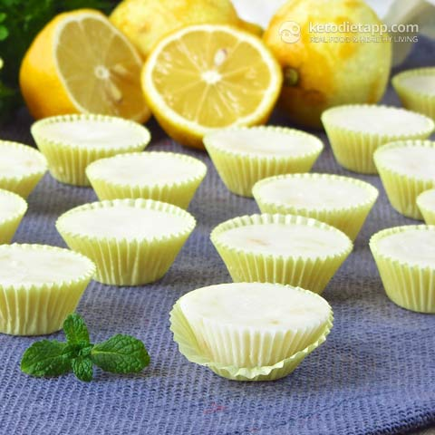

Easy lemon fat-bombs¶
{kind=link}
Ingredients:¶
- 200g coconut butter, softened
- 1/4 cup extra virgin coconut oil, softened (55 g)
- 1-2 tbsp organic lemon zest or lemon extract (1-2 tsp) - it depends on your palate
- 15-20 drops Stevia extract (Clear or Lemon)
- optional: pinch sea salt or pink Himalayan salt
Note
Based on some feedback, 2-4 tbsp powdered Erythritol works better than stevia - the amount depends on your preference. Coconut butter is also known as “creamed coconut” - this is not the same as coconut milk “creamed” in the fridge. You can also use shredded coconut to make coconut butter in a food processor.
Instructions:¶
- Zest the lemons and make sure the coconut butter and coconut oil are softened (room temperature). It’s better if you use a very fine grater to avoid having large pieces of lemon peel in the fat bombs.
- Mix all the ingredients in a bowl and make sure the lemon zest and stevia are distributed evenly. You can use clear, lemon or coconut stevia drops.
- If you prefer a sweeter and less bitter taste (may be caused by too much stevia), use 2-4 tablespoons or powdered Erythritol instead.
- Fill each mini muffin paper cup, or silicone candy mold with ~ 1 tbsp of the coconut mixture and place on a tray that will fit in the fridge.
- Place in the fridge for 30-60 minutes or until solid.
- When done, keep refrigerated. Coconut oil and coconut butter get soft at room temperature. Enjoy!
Nutritional values/serving:¶
| Group | Amount |
|---|---|
| Total carbs | 2.9 g |
| Fiber | 2.1 g |
| Net carbs | 0.8 g |
| Protein | 0.76 g |
| Fat | 11.9 g |
| Saturated | 10.3 g |
| Calories | 112 kcal |
| Magnesium | 5 mg (1% RDA) |
| Potassium | 46 mg (2% EMR) |
- Macronutrient ratio: Calories from net carbs (2.8%), protein (2.7%), fat (94.5%)